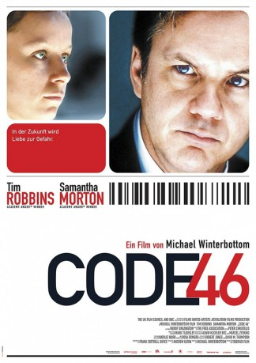

#1395 Code 46
 
 IMDB-Wertung: 6.2 / 10
IMDB-Wertung: 6.2 / 10  Metascore: 57
Metascore: 57 
Bei der Aufklärung eines Betrugs mit gefälschten Ausweispapieren verliebt sich ein Versicherungsdetektiv in die T��terin, wodurch er selbst gegen die Vorschriften seiner futuristischen Gesellschaft verstößt. Der Film verzichtet auf genreübliche Effekte, benutzt vielmehr das urbane Design moderner Metropolen als Hintergrund einer um Identität und persönliche Freiheit kreisenden Science-Fiction-Story. Er entwirft dabei die Schreckensvision einer kontrollierten und hermetischen Welt, die auch in ihren Extremen nur eine kurze Spanne von der Gegenwart entfernt ist und eine Atmosphäre existenzieller Angst vermittelt. Formal von kühler, unemotionaler Konsequenz.
Jahr: 2003
Dauer: 93 Minuten
FSK: 12
Land: England Studio: Sunfilm EntertainmentTonspuren: DTS - ,
Untertitel:
Auflösung: 1080p (1920x808) Größe: 2693 MB
Genre: Drama, Liebe, Sci-Fi, Thriller
Regisseur: Michael Winterbottom
Drehbuch: Frank Cottrell Boyce
Soundtrack: Stephen Hilton, David Holmes
Darsteller:
 Tim Robbins als William Geld
Tim Robbins als William Geld- Togo Igawa als Driver
 Samantha Morton als Maria Gonzales
Samantha Morton als Maria Gonzales- Natalie Mendoza als Sphinx Receptionist
- Om Puri als Bahkland
- Nina Fog als Wole
- Bruno Lastra als Bikku
- Christopher Simpson als Paul
- Jeanne Balibar als Sylvie
- Nina Sosanya als Anya
 Benedict Wong als Medic
Benedict Wong als Medic- Nina Wadia als Hospital Receptionist
- Essie Davis als Doctor
- Jennifer Lim als Tester with Couple
 Archie Panjabi als Check In
Archie Panjabi als Check In- Nabil Massad als Jebel Ali Hotel Owner
 Kerry Shale als Clinic Doctor
Kerry Shale als Clinic Doctor- Kristin Scott Thomas als Williams's wife , uncredited
- Nabil Elouahabi als Vendor
- Sarah Backhouse als Weather Girl
- Jonathan Ibbotson als Boxer
 Emil Marwa als Mohan
Emil Marwa als Mohan- Lien Nguyin als Singer in Nightclub
- David Fahm als Damian Alekan
- Mick Jones als Himself
- Taro Sherabayani als Jim
- Shelley King als William's Boss
- Tuyet Le als Apartment Security
- Teo-Wa Vuong als Tester
- Paul Barnes als Man in Corridor
- Louis Lin als Sales Agent
- Bernadette Jane Vanderkar als Young Maria , uncredited
Datei: X:\2003(A-F)\Code 46 (2003, FSK12, 1920x808).mkv seit 30.06.2015
Festplatte: HD 2003-2004-2005(A-F)
 Es gibt insgesamt 26 Filme in der Gruppe '2003(A-F)'
Es gibt insgesamt 26 Filme in der Gruppe '2003(A-F)'